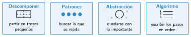

Algoritmos y pensamiento computacional
🤔 Pienso5 min
Qué hago aquí: Piensa un momento y contesta con lo que ya sabes. No pasa nada si no lo sabes: es para empezar.
Escribe cómo llegas de tu casa al colegio. Hazlo para alguien que no conoce El Astillero.
✏️ Puedes responder escribiendo, con un dibujo o un esquema, o contándolo en voz alta.
📖 Leo y aprendo15 min
Qué hago aquí: Lee despacio, mira los dibujos y los ejemplos, y quédate con la idea clave del final.
Antes de programar hay que saber cómo se resuelve el problema, paso a paso. Eso es un algoritmo.
Un programa es un algoritmo escrito en un lenguaje de programación.
Para encontrar algoritmos usamos el pensamiento computacional. Tiene cuatro técnicas:

✏️ Hago25 min
Qué hago aquí: Haz las actividades en orden. Empieza siempre por las básicas.
Completa: un algoritmo es una serie de ordenados que resuelve un .
Une cada técnica con lo que hace.
| Descomponer • | • Buscar lo que se repite |
| Patrones • | • Quedarse con lo importante |
| Abstracción • | • Partir en trozos pequeños |
Parte el problema «preparar la mochila» en cuatro problemas más pequeños.
Un robot hace: avanzar 2 pasos, girar a la izquierda tres veces. Escríbelo más corto con «repetir».
Escribe un algoritmo para encontrar el número mayor entre cinco tarjetas boca abajo. Solo puedes mirar una tarjeta cada vez.
✏️ Puedes responder escribiendo, con un dibujo o un esquema, o contándolo en voz alta.
🚀 Amplío (si quieres saber más)
Qué hago aquí: ¿Has terminado? Lee la curiosidad o elige el reto. Es voluntario.
Escribe el algoritmo para que un robot dibuje un triángulo de lados iguales. ¿Cuántos grados gira en cada esquina? Pista: al terminar ha dado una vuelta completa.
✅ Compruebo5 min
Qué hago aquí: Contesta sin mirar la ficha y marca cómo lo llevas.